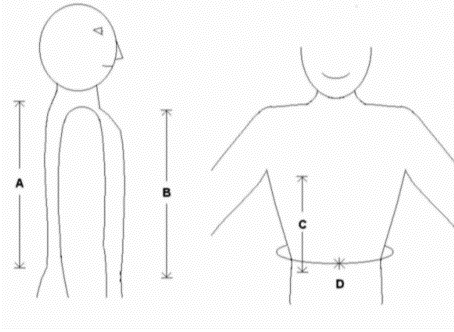
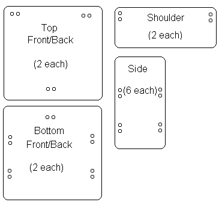
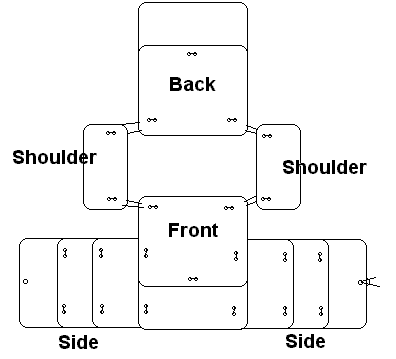
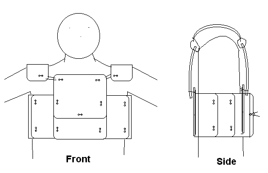

The Well-Equipped Protester
by
Carl Bussjaeger
|
Last month's article on DIY gas masks by Bill Riley got me thinking about other hazards encountered by protesters. Or in a certain Californian port, anyone in the general area, protester or worker. Seems the goon squad decided to open fire with a wide variety of 'nonlethal' firearms ammunition and beat up anyone they could reach. Result: Several anti-war protesters and the dock workers being protested injured and hospitalized.
Since the statist goons have no concern for your safety and well-being, you'd darned well better be ready to look after yourself. Riley already covered chemical hazards, so I'll address physical impact.
Body armor Tying into this, during my badge days, I was invited to join my department's new riot squad. I declined, but I (with a partner) also challenged the riot squad to a little contest. After seeing our gear and and learning about our training, they opted not to meet us on the field. Basically, I understand the need for impact protection, and how to provide it. As Riley mentioned, you don't necessarily want your defenses to be conspicuous when attending a protest; it makes you a potential target. So here's a bit of basic body armor that hides under a jacket, sweater, or even a large shirt. It's cheap, easy, and lightweight.
Materials An excellent source of plastic are five gallon polyethylene paint bucks. Cut off the bottom and the top rim, then cut a line down the cylinder to get a sheet. This plastic is rigid enough to soak up shots from standard riot sticks; it'll sting, but you aren't likely to break bones. And the curve of the plastic will help you properly fit it to your body. If you want more protection, cut your plastic from a heavy duty plastic 55 gallon drum. I've taken full "home run" swings from a baseball bat while wearing this. With no padding under it, it stung (a lot), but I was undamaged.
Construction  Now you need to cut out twelve plastic plates, and drill sets of holes in each one.  The height of front and back bottom plates and the side plates should equal your "front/back length" (B/A). Make the front and back plates as wide as you want them. The width of the side plates (three per side) is the difference in your girth and the front and back widths. That is, the side plates cover the space between the front and back plates, plus a one-to-two-inch overlap for each plate. The plates will overlap to support one another.  The front top plate's width can be the same as the bottom plate, but you may wish to make it a little narrower so it doesn't interfere with bringing your arms forward. It's height is your front torso length minus the height of the bottom plate, plus a one-to-two-inch overlap again. Figure the size of the back top plate the same way, but using the back length measurement. The shoulder plates need to be long and wide enough to cover you shoulder naturally. On a big guy like me, ten by four inches works. Round off the plate corners; you don't want sharp points gouging you when you get hit. Now drill the sets of holes in each plate as indicated in the diagram. It's time to assemble your armor.  Lay the plates out in a cross arrangement. Match up holes in one plate with the corresponding holes in an adjoining plate, and lace the plates together with a piece of cord. My preference for overlapping is to have the plate in front to be on top of the plate towards the rear. The shoulder pieces may be a problem. First, you might need to curve the plastic a little more. If so, gently heat them in your oven, or with a propane torch, until they soften slightly. Mold them, and let them cool. To get the right cord length to lace the shoulders on, you may need to put the armor on and cut the cord to fit.
"...that scalds with safety..." When you put this contraption on, tie the side flaps in place using the set of single holes and the rear-most plates. Tie it snugly to your body. If the plates are flat against you when you get hit, the force will be distributed across the area of the plate. You'll feel it, but you'll be OK. But if the plate is floating loose away from your body when the shot comes in... That plate is going to slap against you; it'll sting like the dickens. So get it as tight as you can stand. Remember that most cords have some tendency to stretch, too. And if you suspect the goons will break out live ammo, you can wear this over a ballistic vest, too.
Headgear Between Riley's gas mask and this impact vest, I think you're ready to hit the streets. Have fun!
|